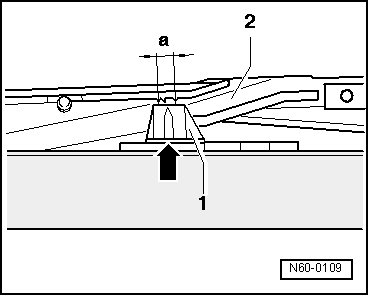

Glass Panel, Adjusting Parallel Movement
Sunroof with Glass Panel Overview
Glass Panel, Adjusting Parallel Movement
• The parallel movement adjustment can only be performed with removed drive motor and glass panel (in zero position).
- Remove drive motor for sunroof, refer to --> [ Drive Motor for Sunroof ] Sunroof with Glass Panel.
Marking - arrow - on upper part of rear guide - 1 - must be located on both sides between markings - dimension a - at link guide - 2 -.

Link guide - 2 - must be engaged in guide rail (cannot be moved by hand).
- Slide upper part of guide - 1 - only from front toward rear center, between markings.
- Install drive motor (zero position) in this position.
Then check the zero position.